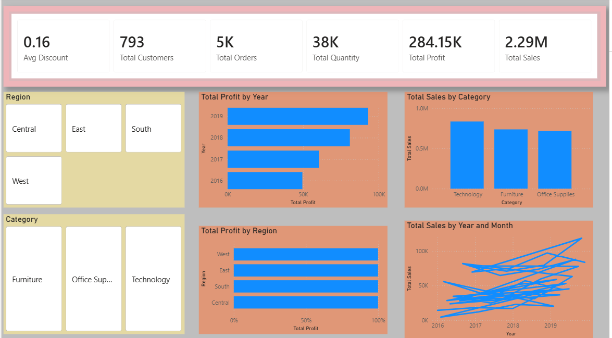
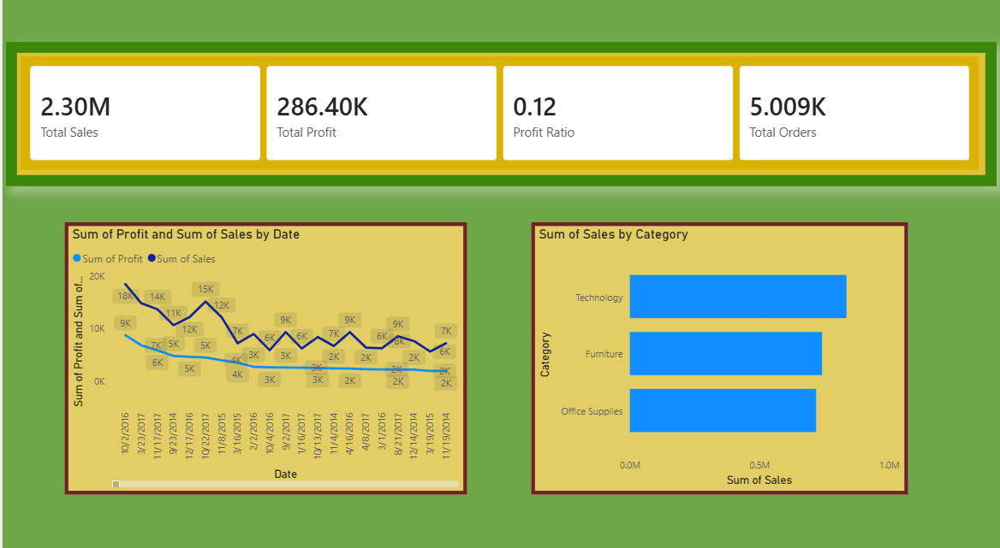
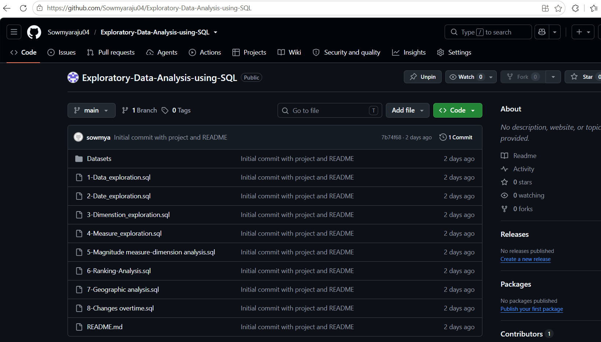
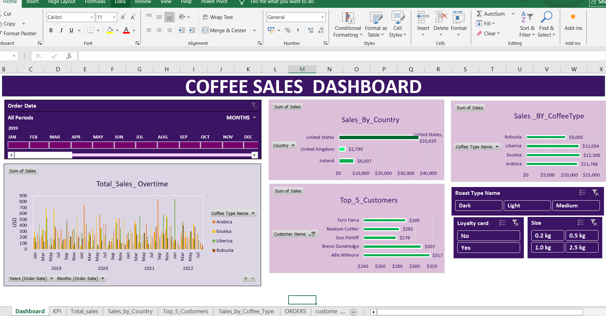
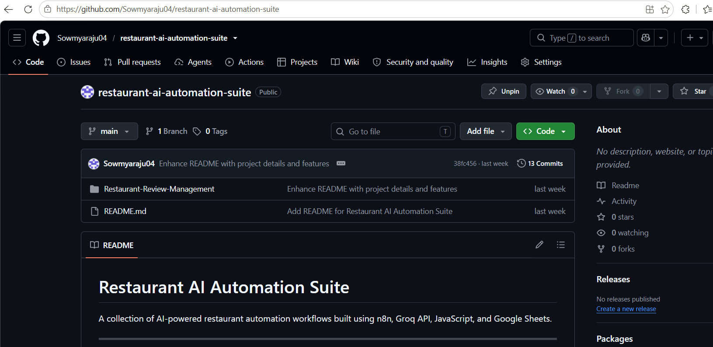

Hello, I'm
I'm a Computer Science graduate specializing in Data Science with a strong interest in Data Analytics and Business Intelligence. I enjoy transforming raw data into meaningful insights using SQL, Python, Excel, and Power BI. Through multiple end-to-end analytics projects and an AI internship, I have developed practical experience in data cleaning, analysis, visualization, dashboard development, and business reporting. I'm continuously learning and looking for opportunities to solve real-world business problems using data.
Jan 2026 – April 2026
GitHub Repository: AI Internship Projects
A selection of end-to-end analytics and AI projects showcasing my skills in Python, SQL, Power BI, and business intelligence.

Designed an end-to-end analytics solution that transforms transactional retail data into actionable business insights using Python, SQL, Power BI, and AI-powered reporting.

Built a complete retail analytics solution covering data cleaning, SQL analysis, Python exploration, Power BI dashboards, and business reporting.

Explored retail warehouse data using SQL to analyze customer behavior, product performance, sales trends, and business performance.

Developed an interactive Excel dashboard to analyze coffee sales, customer behavior, and product trends through dynamic visualizations and filters.

Built AI-powered restaurant automation workflows using n8n, Go API, JavaScript, and Google Sheets to streamline restaurant operations.
SAI VIDYA INSITUTE OF TECHNOLOGY
Graduated: 2026
Download my latest resume to learn more about my education, technical skills, internship experience, and projects.
Download ResumeI'm open to Data Analyst, Business Analyst, and BI Analyst opportunities. Feel free to connect with me.